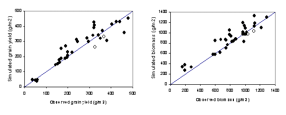
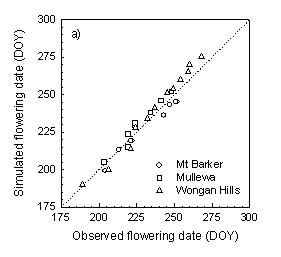
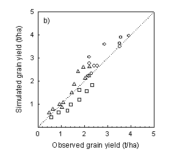

Introduction
The canola module was developed by Michael Robertson in conjunction with Chris Smith (CSIRO Land and Water), John Holland (NSW Agriculture) and John Kirkegaard (CSIRO Plant Industry). Further testing has been conducted by Imma Farre (CSIRO Plant Industry). The module is described in the paper by Robertson et al. (1999). The reader is referred to the science document for the plant module for a comprehensive description of the processes simulated by APSIM-Canola. This document outlines some canola-specific issues that are not covered by the plant science document. The canola module simulates canola (Brassica napus) and the related species Indian mustard (Brassica juncea).
Goto generic Plant model documentation
Notable features of APSIM-Canola
The phenology of canola cultivars respond to vernalisation and photoperiod (daylength).
In the module, all green leaf area senesces soon after flowering and photosynthesis is then conducted by the pods.
APSIM-Canola is not phosphorus-responsive, this is currently under development.
Crop growth is not sensitive to row spacing
Crop growth is not sensitive to waterlogging.
Cultivars and crop classes
There are three crop classes:
Conventional canola
Triazine tolerant canola – this crop class has a radiation use efficiency 20% less than the conventional type
Winter canola – this is designed to simulate European types, but has received limited testing. It differs from the conventional crop class in that it has a different sensitivity of leaf senescence to frost and a different rate of leaf senescence due to ageing.
There are 14 conventional cultivars: PacN145, Monty, Hyola42, Surpass400, Rainbow, Mystic, Narendra, Surpass600, Geordie, Oscar, Marnoo, Eureka, Charlton, Clancy, Dunkeld There are three triazine-tolerant cultivars: Karoo, Drum, Pinnacle There are two mustards: JL1, 397 There are four generic cultivars: early, mid and late maturing, and a mustard NOTE: there is no explicit linking of crop classes with cultivars in APSIM-Canola, so the user must be aware to specify the triazine-tolerant class, for instance, if they are using a triazine-tolerant cultivar.
Validation
APSIM-Canola has received testing across the Australian wheat belt, with factors such as cultivars, sowing date, N supply, irrigation, soil type varying. Papers describing validation of APSIM-Canola are by Robertson et al. (1999), Robertson et al. (2001), and Farre et al (2001). The following two figures demonstrate the performance of the module against Australian datasets.

Figure 1: Observed and predicted (a) grain yield (oven-dry) at maturity and, (b) total biomass at maturity for datasets presented by Robertson et al (1999). The line is the 1:1 relationship. The model was tested against independent datasets from Australia (26 to 36o latitude), which varied in terms of nitrogen supply, water supply, sowing date, and variety. Grain yields, ranging from 30 to 500 gm-2, were simulated with a root mean squared deviation of 45 gm-2 (15% of the observed mean).


Figure 2: Simulated and observed flowering date and grain yield for different canola cultivars at three sites in Western Australia (Mt Barker, Mullewa and Wongan Hills) in 1998 . The dotted line is the 1:1 line. DOY-day of the year.
References
Farré, M. J. Robertson, G. H. Walton, S. Asseng 2000. Simulating response of canola to sowing date in Western Australia. 10th Australian Agronomy Conference, Hobart, Tasmania. Robertson MJ, Holland JF, Kirkegaard JA, and Smith C J 1999. Simulating growth and development of canola in Australia. Proceedings 10th International Rapeseed Congress. (CD-Rom Proceedings).
Robertson MJ, Holland J, Cawley S, Bambach R, Cocks B and Watkinson AR 2001. Phenology of canola cultivars in the northern region and implications for frost risk. 10th Australian Agronomy Conference, Hobart, Tasmania.